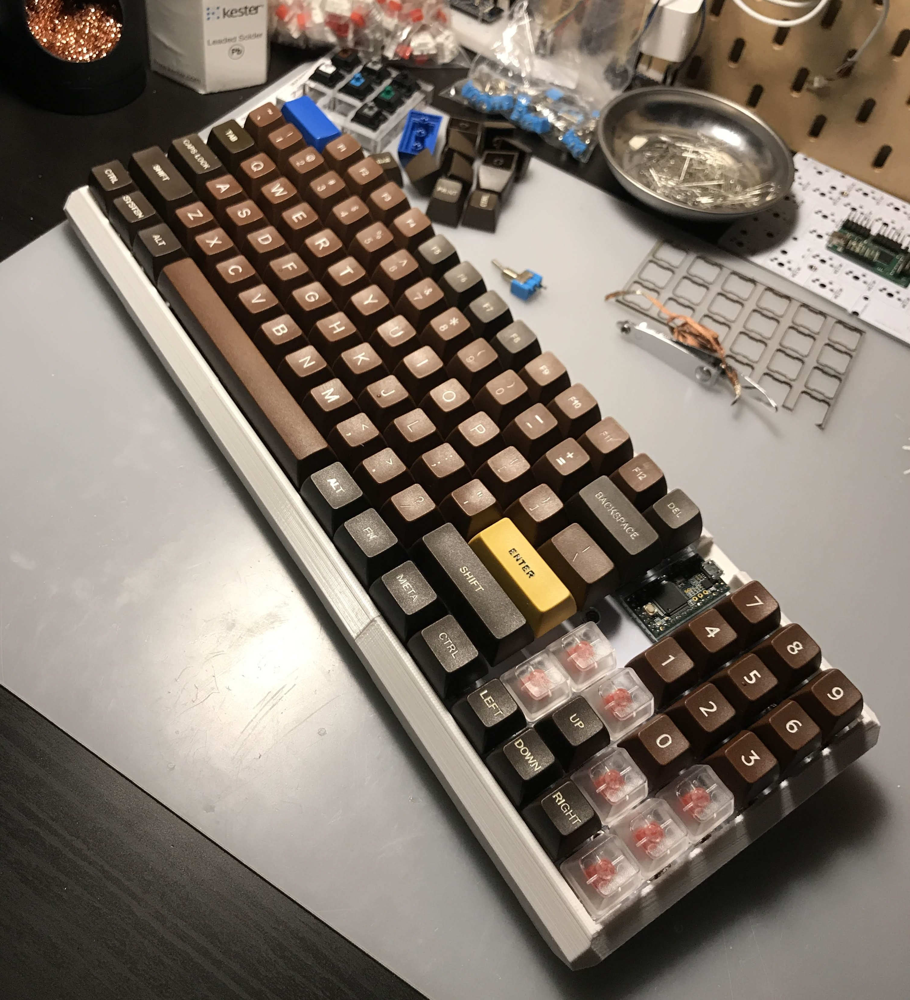
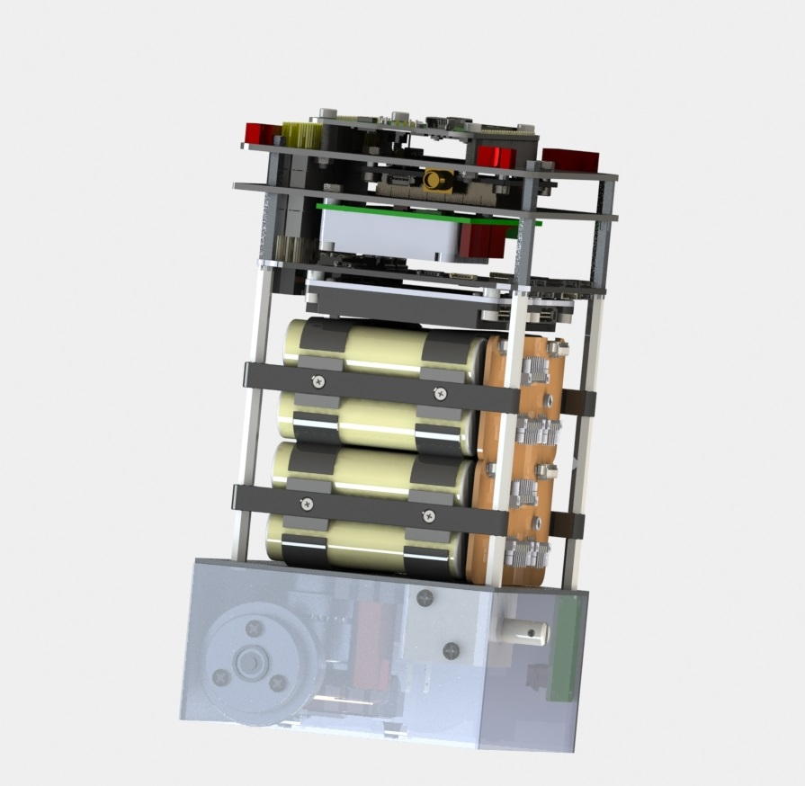

Rocket Landing guidance
I implemented the 2018 paper "Successive Convexification for 6-DoF Mars Rocket Powered Landing with Free-Final-Time" by Szmuk and Acikmese. This was predominantly as a final project for coursework at Boulder but also to get familiar with successive convexification framework for research. You can find my paper here. I also added some cold gas control work at the end to learn how it works. I didn't have time to make it a proper cold gas bang-bang system; but maybe soon.
LR101 Work
I built an apparatus consisting of a submersible pump, a bucket, and a 3D printed injector plate to continuously run vinegar and water through the regenerative channels for hours to clean it out. I then baked it to flush out the water. Still more work needs to be done; I may be using this for a rocket powered lander project. However, I may likely move to a lower thrust LOX/IPA engine of my own design. I also got a pressure sphere and some Marotta valves... We shall see where this project takes me.
Linear Quadratic Gaussian Control on Quadcopter
This is a linear quadratic regulator with fixed gain matrix and an extended kalman filter. I wrote this as a final project for MAE6780 Multivariate Control. You can find the paper here. I tried to do some sophisticated guidance. But to be honest, it was just a copy of some CVX work I did previously.
Convex Optimal Rocket Landing Guidance
I implemented an algorithm from papers written by Blackmore, Acikmese, Ploen, and Carson. The single problem has a fixed final time, and an outer terminal time optimization loop is run to find the best parameter. I wrote this as a final project for ECE5555 Stochastic Control and Estimation. You can find my paper here
3DOF Stewart Platform 2017
Eric Berg, Adam Weld, and I built this 3DOF Stewart platform for Dr. Bruce Land's microcontroller course at Cornell University. I worked on the hardware and wrote most of the control software. You can find a website detailing this project here (it might take a bit to load).
Please contact me if you would like me to consult on a similar project. This was a super fun project and I have gotten a lot of attention from it.TeXbrd MkI and MkII
The MkII keyboard is for sale, contact me for more information!
Admittedly, it's a weird hobby. Check my github for some Teensy microcontroller code that can accommodate many different layout matrices. My mkI hardware is a 60% layout with LaTeX bindings. MkII is done and pretty much better in every way. It is completely from scratch, with my own case design that is 3D printed in three parts that slot together. I also like making converters for vintage keyboards like the IBM4074 "Pingmaster"; more on my blog.
This is a finished MkII board.  I have made another for a customer. Here you see the MkI hardware with a MkII PCB in the background.
Electric Longboard 2018
I know. Too stereotypical. Anyways, this is a 4kW board with 18650s recycled from the hover-board days. I also designed and built the wireless controller from scratch, with the control mechanism a flexible resistor (flexistor?). I will be redesigning this because communication integrity is not quite the best.
Quadrotor 2017
Eric berg and I built a drone and wrote the flight software for my embedded systems course, ECE3140, as a final project. This was just a brute force PID controller; we did not consider dynamics and manually tuned the system.
hackMIT BraceX - 2018
Eric Berg, Adam Weld, Katie Bradford, and I built a robotic-assisted exo-arm! However, we didn't win anything this year.Devpost.
hackMIT 2017
Eric Berg, Adam Weld, and I won an award at hackMIT! We made a computer vision text-to-speech system that helps the vision impaired by telling them their surroundings, the distance to specific objects, and the describing the ambiance. We on the Amazon prize! This was actually an outstanding project and I would love to recreate it one day. Devpost.
Caltech Space Challenge 2017
I had the wonderful opportunity of spending a week at Caltech/JPL on mission formulation for a lunar base. The goal was design an architecture that would harvest hydrogen and oxygen from the regolith, and refuel craft in orbit around Earth to increase payload beyond the Earth-Moon system. Many hours spent crunching numbers, few spent sleeping. Also my team won; we all got Microsoft surface pros! You can find the paper here. You can also find a conference paper here.
 I also got to meet astronaut and SpaceX VP Garret Reisman!
I also got to meet astronaut and SpaceX VP Garret Reisman!
CUGrav 3U Cubesat
Cornell Artificial Gravity cubesat started as a Master's project. The goal of this spacecraft is to be the first platform to show stable control of artificial gravity with a nonrigid tether. I lead the avionics subsystem for a year where I performed a full-system in-house design. This means that my team and I recognized the requirements for, and designed the PCBs for the power system, flight computer, attitude determination and control, telemetry, and solar power. I also wrote the requirements and outlined the flight software components. The difficulty was in developing three independent avionics subsystems that had to speak to each other and green-light power budgets.
Here you can see the exploded view with tether motors, avionics stack, solar cells, and Kane damper loops for energy dissipation.
Akash Systems 6U Satellite
This was done in conjunction with 5 other students and the paper can be found here.
Here you can see a CAD view of the avionics stack which takes up approximately 2U, where the rest of the volume is for the high gain parabolic antenna. 
Violet Nanosatellite ~55kg
I worked on the University Nanosat Program finalist-spacecraft Violet for roughly 2.5 years under the supervision of Dr Mason Peck. I worked across all subsystems from verifying the telemetry/command systems, to building ground stations, to ultimately leading the avionics team. Under this title, I worked on every PCB on the spacecraft, bringing them to full functionality and modifying hardware and firmware as necessary to accommodate de-scoping.
I presented to the Air Force Research Laboratory for three Pre-Integration Reviews (PIRs) and 1 Pre-Ship Review (PSR). Ultimately, they chose to use their funding elsewhere and we ended up working with Ursa Space Systems as a bus for their payload. Again, it seems the plans have changed and Violet resides in Cornell's Sibley school of mechanical and aerospace engineering with Dr. Peck.
Here I am operating on the flight computer: